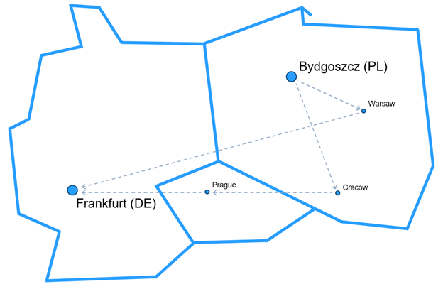

How Poland’s Post Bank accelerated digital transformation while maintaining regulatory compliance on AWS
Authors: Waldemar Szczepański, Bartłomiej Rafał, Piotr Boetzel, and Dariusz Matczak | Posted: 16/09/2025 | Categories: Cloud Adoption, Customer Solutions, Financial Services, Government, Migration, Public Sector, Regions
In Poland’s competitive financial services market, Post Bank faced a critical challenge: how to accelerate innovation and improve customer experience while operating under strict regulatory requirements. The answer came through a strategic cloud migration that transformed not only the bank’s technology infrastructure, but also its entire approach to digital banking.
By migrating its electronic banking system to Amazon Web Services (AWS), Post Bank reduced application deployment time from 2 hours to just 10 minutes, lowered CPU utilization by 40%, and significantly improved system reliability—all while maintaining full compliance with Poland’s stringent financial regulations.
This transformation story demonstrates how financial institutions can use AWS Cloud technology to become more agile and efficient without compromising security or compliance. For Post Bank, the impact goes beyond technical metrics: employee turnover fell from 30% to 5%, and the bank can now provision new development environments in 30 minutes instead of 30 days.
Building confidence through incremental adoption
Post Bank’s cloud journey began cautiously in 2019 with the migration of a single noncritical system.
“We needed to learn cloud technologies and build confidence across the organization,” — Waldemar Szczepański, Head of the Cloud Center of Excellence (CCoE) at Post Bank.
This controlled approach allowed the IT team to develop cloud skills while demonstrating tangible value to stakeholders.
The COVID-19 pandemic significantly accelerated the bank’s digital transformation. The ability to scale quickly and roll out new features continuously became critical to business success.
In addition, the conflict in Ukraine introduced another strategic consideration: senior leadership recognized the importance of geographic redundancy and hosting systems outside Poland’s borders.
These converging factors created the right moment for organizational change. Post Bank established a CCoE team following the AWS Cloud Adoption Framework (AWS CAF), laying the foundation for a comprehensive cloud migration strategy.
Navigating organizational transformation
Migrating a critical business system requires more than technical expertise—it demands organizational alignment. Post Bank’s transformation reshaped the entire IT operating model: adopting new technology stacks, changing ways of working, introducing cloud cost management practices, and updating operational processes.
The CCoE team had to coordinate a wide range of internal stakeholders, including architecture, security, audit, and operations teams — each with its own requirements and concerns that needed to be addressed.
“We couldn’t do this alone,” — Szczepański explains. “AWS architects and an AWS Partner helped us build the proof of concept, and the AWS Migration Acceleration Program (MAP) provided both methodology and partial funding for the migration.”
This collaborative approach proved essential. AWS architects and experts from the AWS Partner worked side by side with Post Bank’s teams, contributing deep expertise while transferring knowledge to internal staff.
Architecting for a hybrid environment
After carefully assessing team capabilities, application complexity, and user impact, the CCoE team selected the electronic and mobile banking application as the flagship migration project. This mission-critical system would test the bank’s ability to maintain performance and reliability in a hybrid environment spanning on-premises and cloud.
The team adopted Infrastructure as Code (IaC) with Terraform as the foundation for fast and consistent deployments.
However, the hybrid architecture introduced its own challenges. The 750-kilometer distance between the on-premises data center and the AWS Region Europe (Frankfurt) made latency management a top priority.
Post Bank deployed redundant AWS Direct Connect links over geographically diverse paths, achieving stable 30-millisecond latency that met the application’s operational requirements.
 Figure 1: AWS Direct Connect connectivity layout
The project team applied the 6 Rs migration strategies pragmatically: rehost, replatform, repurchase, re-architect, retire, and retain.
When the on-premises network access control model couldn’t be directly replicated in the cloud, they chose the “repurchase” strategy and adopted a third-party solution from AWS Marketplace.
To ensure high availability for the database layer, they replatformed to Amazon Relational Database Service (Amazon RDS) Multi-AZ deployments. The in-memory cache solution was rehosted and enhanced with a community plugin to support AWS Auto Scaling.
Proving value through measurable success
Post Bank’s proof of concept (PoC) was more than a technical test—it was a data-driven mechanism to convince stakeholders. The project team defined 10 key performance indicators (KPIs) that directly addressed stakeholder concerns around cost, security, and performance.
“Choosing the right KPIs was critical,” — notes Bartłomiej Rafał, CCoE Technical Lead. “We needed metrics that could respond to skepticism with hard numbers.”
The results exceeded expectations for most metrics. Only one KPI fell short of the target, yet it still represented a significant improvement over the average on-premises performance.
This evidence-based approach turned skeptics into strong supporters. System availability improved noticeably thanks to automatic self-healing capabilities, which resolve incidents within 10 seconds instead of requiring manual intervention. Development velocity increased sharply, with new environments now provisioned in 30 minutes instead of 30 days.
Maintaining security and compliance in the cloud
For a financial institution in Poland, security and regulatory compliance are non-negotiable. Post Bank built its cloud foundation on AWS best practices, following the AWS Well-Architected Framework Security Pillar and the AWS Security Reference Architecture.
By using AWS Organizations together with AWS IAM Identity Center and service control policies (SCPs), the bank enforced critical compliance controls such as environment isolation, separation of duties, least privilege access, and mandatory encryption. AWS Control Tower simplified security governance, enabling policies such as restricting service usage to Regions within the European Economic Area (EEA).
The engineering team used Account Factory for Terraform (AFT) to create all new AWS accounts with standardized configuration and security settings. For identity management, they federated IAM Identity Center with the existing identity management system, simplifying compliance audits by adjusting existing processes rather than introducing entirely new ones. The following diagram illustrates this architecture:
 Figure 2: Permissions assignment and security architecture
Figure 2: Permissions assignment and security architecture
It was important for the bank to keep changes to existing processes to a minimum while still simplifying compliance. The hub-and-spoke network security architecture, shown in the following diagram, allowed the bank to extend its existing security processes into the AWS Cloud through synchronized firewall management.
 Figure 3: Network architecture and security management
Figure 3: Network architecture and security management
Lessons for financial institutions
Post Bank’s successful cloud migration offers valuable lessons for other financial institutions planning similar journeys:
-
Start small but think big – Beginning with a noncritical system helped Post Bank build skills and confidence while limiting risk.
-
Establish strong governance early – The CCoE team played a central role in leading the initiative and coordinating across stakeholder groups.
-
Invest in architecture – Time spent designing the system correctly, including evaluating 6 Rs migration strategies, pays off during implementation and operations.
-
Use PoCs strategically – Include KPIs that directly reflect stakeholder concerns and clearly demonstrate benefits such as higher availability and better operational efficiency.
-
Leverage external expertise – Collaborate with AWS architects and use programs like MAP (Migration Acceleration Program) to accelerate migration while building internal capabilities.
Looking ahead: Continuous innovation
“AWS Cloud made our administrators and testers happier and increased the satisfaction of our business stakeholders because we can deploy changes and upgrades faster,”
says Szczepański. This transformation has fundamentally changed how Post Bank approaches technology. Artur Szatkowski, Director of the IT Systems Department at Post Bank, states confidently:
“We will not go back to on-premises solutions.”
The bank plans to migrate additional systems and is actively exploring new cloud-based capabilities. Recently, it implemented an internal AI assistant using Amazon Bedrock and Anthropic’s Claude 3.5. This allows employees to quickly search across the bank’s extensive internal knowledge base, including documents, forms, terms of service, and marketing materials.
Post Bank’s journey shows that with careful planning, close collaboration, and a strong commitment to best practices, financial institutions can gain the agility and innovation of cloud computing while maintaining the strict security and compliance demanded by customers and regulators.
About Post Bank
Post Bank is a Polish consumer bank with approximately 700,000 customers and 35 years of market presence. Its strategic partner and majority shareholder is the national Polish Post. Through this partnership, the bank’s products and services are available at every post office nationwide, creating a network of around 4,700 branches—five times larger than its competitors. This reach enables Post Bank to serve even citizens who are not digitally connected, supporting financial inclusion across Poland.
 |
Waldemar Szczepański – Waldemar is the Head of the Cloud Center of Excellence (CCoE) at Post Bank, responsible for the bank’s development in cloud technologies and artificial intelligence (AI). He has over 20 years of experience in the financial sector. At Post Bank, he has led projects to build a modern workplace and to adopt new technologies, including AI and cloud banking. |
|---|---|
 |
Bartłomiej Rafał – Bartłomiej is the CCoE Technical Lead at Post Bank. He is passionate about using technology to solve business problems and improve existing processes. As a tech generalist, he has a broad interest in all areas of IT—from infrastructure, cybersecurity, and system architecture to management—and always has more ideas than time to implement them. |
 |
Piotr Boetzel – Piotr is a Senior Solutions Architect at AWS, working with public sector customers in Central and Eastern Europe (CEE). He supports customers in modernization and transformation projects, with a particular focus on security and regulatory compliance. |
| Dariusz Matczak – Dariusz is an Account Manager at AWS, responsible for public sector customers in Poland. He has over 15 years of experience working with clients and partners across multiple industries, supporting their digital transformation to the cloud and helping deliver a variety of technology projects. |